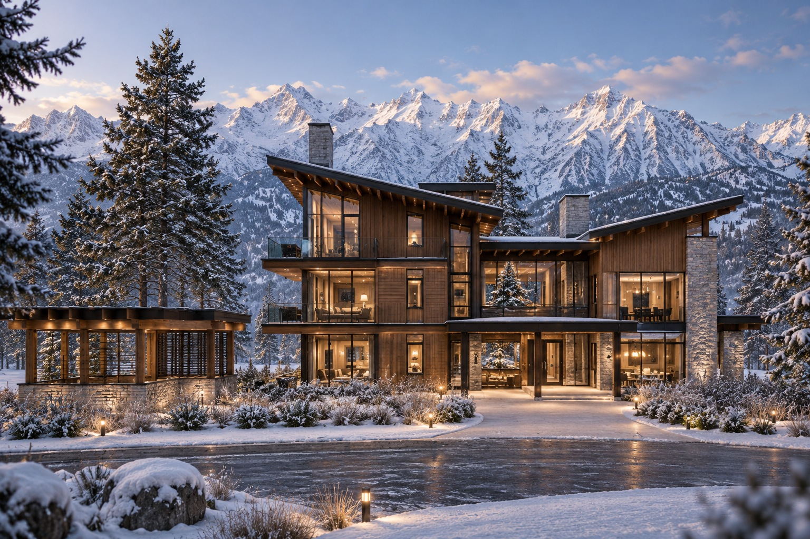
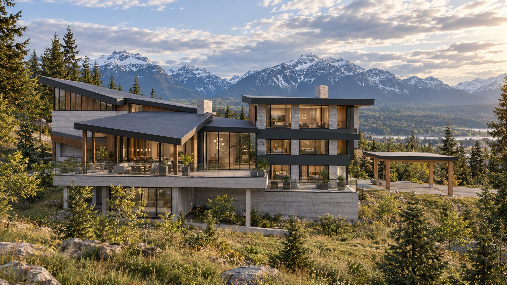
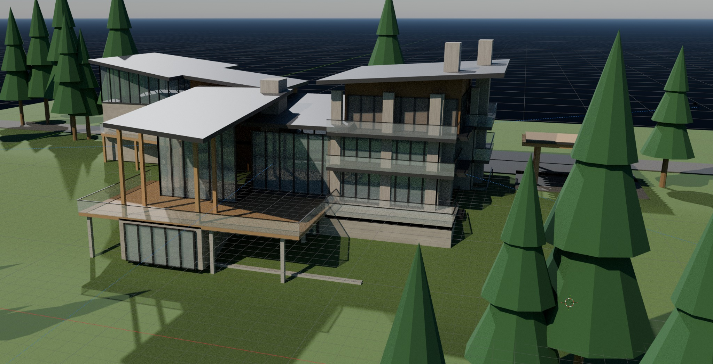
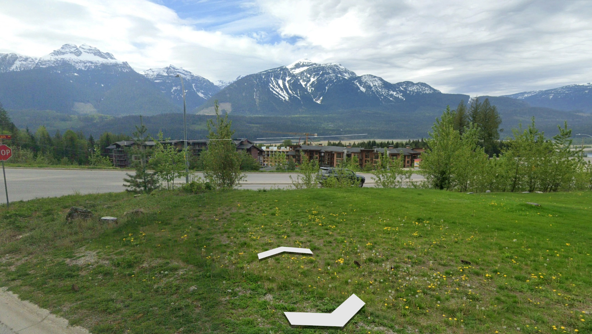
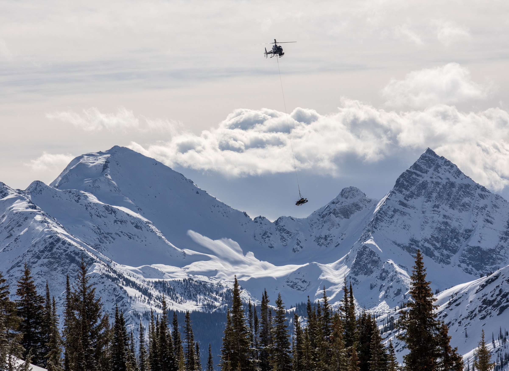
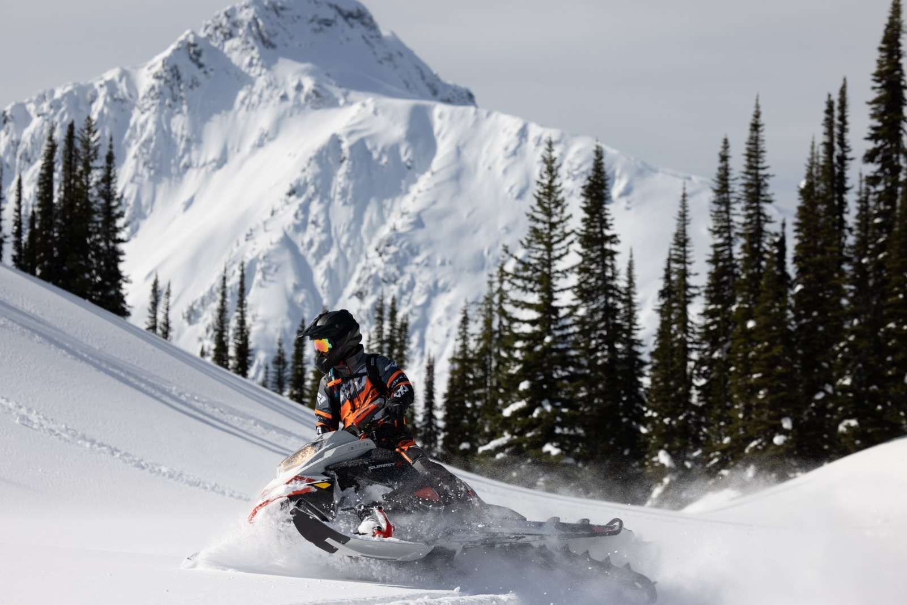
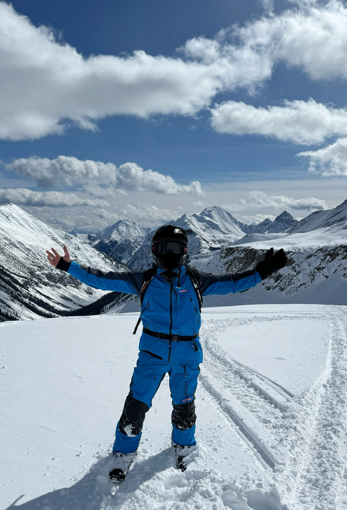
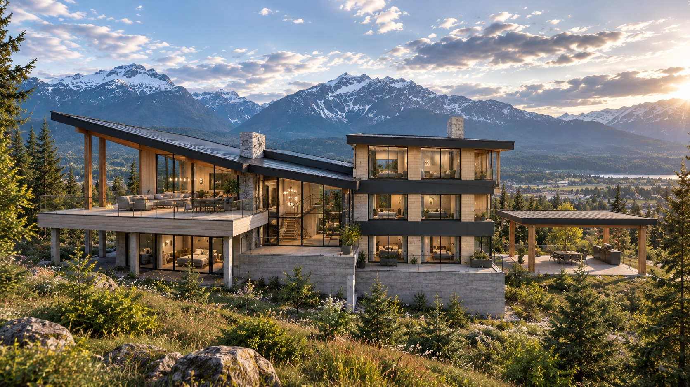

Revelstoke Mountain Resort
North America’s longest lift-accessed vertical descent: 1,713 metres, with 3,121 acres of terrain and an average 10.5 metres of annual snowfall.
1,713 mlift-accessed vertical

A private mountain residence · Revelstoke, British Columbia
An architecturally distinctive alpine home positioned at the convergence of Revelstoke’s legendary skiing, future world-class golf, heli access and year-round wilderness.
Four Stags is conceived as a refined mountain basecamp: generous glazing, layered outdoor rooms, warm natural materials and a composition that steps with the site rather than fighting it.
In winter, the day starts with first tracks, deep powder or a helicopter lifting into the Selkirks. In summer, the same address opens into championship golf, alpine hiking, cold clear water and long evenings outside.

The architecture
Timber, stone, charcoal metal and expansive glass create a house that is substantial without feeling heavy. The architecture frames the landscape rather than competing with it.
Layered indoor-outdoor living with deep covered terraces.
Warm interiors set against dark reflective glazing and alpine views.
Rooflines and volumes shaped to read naturally against the mountain.
A four-season residence intended for both private retreat and entertaining.

The location advantage
North America’s longest lift-accessed vertical descent: 1,713 metres, with 3,121 acres of terrain and an average 10.5 metres of annual snowfall.
Cabot’s first mountain golf destination is scheduled to open in 2027, with an 18-hole Rod Whitman design overlooking the Columbia River and an additional 12-hole short course.
The planned Cabot Revelstoke Mountain Lodge will become the new home of Selkirk Tangiers Heli Skiing, complete with an adjacent helipad.
Destination amenities are independently operated. Access, availability and future development plans are subject to change.

The mountains
Winter in Revelstoke
From resort skiing to high alpine days, winter is the reason to step outside. These are real Revelstoke photographs, shared by the people behind Four Stags.

01 / Heli-ski country
A horizon of peaks. The anticipation of a powder day. Revelstoke’s heli-skiing culture is part of the mountain life that inspires Four Stags.

02 / World-class snowmobiling
Deep powder, mountain terrain and the kind of days you talk about long after winter. Snowmobiling is woven into the Revelstoke lifestyle.
03 / A moment worth keeping
The Four Stags lifestyle, experienced firsthand. Real friends, real snow and a mountain moment that needs no embellishment.
Captured in Revelstoke
04 / Come home
A residence conceived for the other half of the perfect mountain day.
Explore the private offeringArchitectural concept imagery · Proposed residence
Summer
When winter recedes, Revelstoke shifts into alpine ridgelines, wildflower meadows, lakes, rivers and long golf evenings. This is not a ski house with an off-season. It is a four-season mountain residence.
Cabot Revelstoke is planned as a destination mountain golf experience with dramatic valley and peak views.
National parks, lift-accessed alpine trails, rainforest walks and high ridgelines.
More than 200 rivers, creeks and streams are found within 50 km of Revelstoke, alongside major lakes.
Paddle Lake Revelstoke, raft the Illecillewaet, or disappear into a quiet cove for the afternoon.

Four Stags is not about escaping life.
Private pre-sale opportunity
Register for the private offering package, architectural material, project updates and release information.